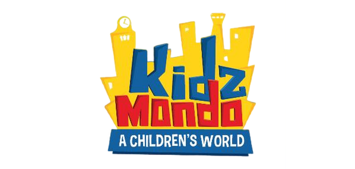
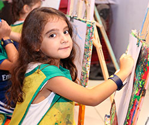
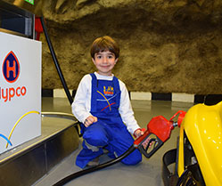
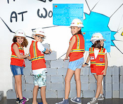

Franchise
Contact Us
KIDZMONDO CONCEPT
Playful Learning
The KidzMondo curriculum promotes learning through hands-on-discover
EDUCATIONAL COMPETENCIES:

Cognitive Development:
Attention & communication
Imagination & creativity
Memory & logic relations
Scientific thinking
Analysis & synthesis

Emotional Intelligence:
Handling of symbolic expressions
Solving conflicts
Construction of identity
Gender, race & vocation patterns
Development of subjectivity
Sublimation of anxiety and
hyperactivity

Social Development:
Moral development
Knowledge of the adult world
Social skills development
Inter-racial understanding
Preparation for working life
GO BACK TO THE TOP